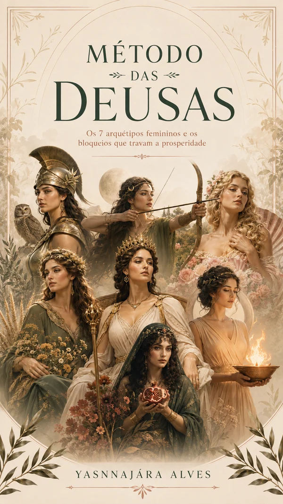
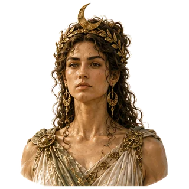
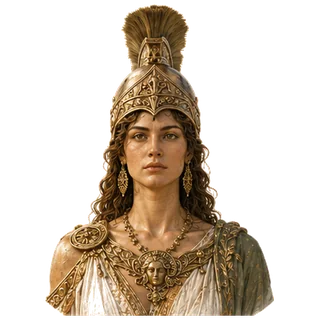
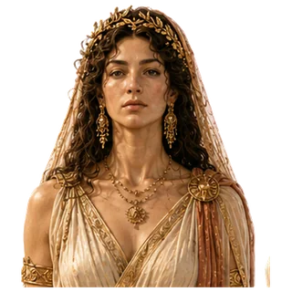
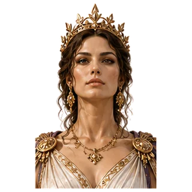
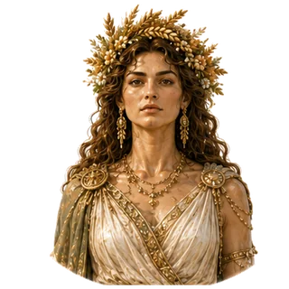
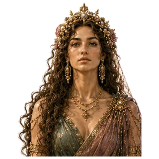
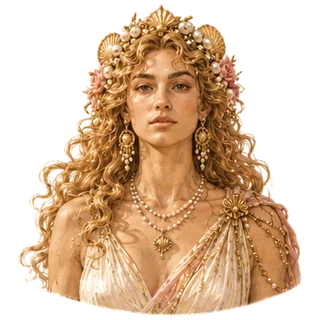

01
RESPONDA
Um passo por vez
Em cada cena, toque no que você faria primeiro e depois no que menos faria.
Você pode voltar e mudar uma resposta.Seu jeito de escolher, cuidar, criar e se relacionar conta uma história. Vamos olhar para ela?
No Método das Deusas, sete deusas gregas dão nome a sete capacidades. Uma delas é a sua regente : a que rege as suas escolhas hoje.
Responda a cenas do dia a dia, escolhendo o que você faria primeiro e o que menos faria. No final, descubra qual deusa está regendo as suas escolhas.

Uma mensagem, um pedido, uma conta que apertou. Você escolhe o que faria de verdade, sem resposta certa.
Em cada cena, toque no que você faria primeiro e depois no que menos faria.
Você pode voltar e mudar uma resposta.Veja qual deusa está regendo suas escolhas e o desenho das sete deusas em você.
O mapa inicial é gratuito.Abra o relatório completo por área da vida, conheça a consulta individual ou comece pelo e-book da sua deusa.
O próximo passo fica com você.49 cenas · cerca de 15 minutos · faça uma pausa quando precisar
Cada deusa representa uma capacidade. Na luz , ela ajuda. Na sombra , passa do ponto (por excesso) ou fica sem espaço (por escassez). Toque numa deusa para ver as duas faces.

Escolher seus caminhos
▲ Por excesso: Autonomia demais: fica difícil pedir ajuda ou ceder.
▽ Por escassez: Seus planos e limites ficam sem espaço.

Planejar e decidir
▲ Por excesso: Controlar e explicar tudo toma o lugar de sentir.
▽ Por escassez: Organizar e decidir fica difícil.

Encontrar seu centro
▲ Por excesso: Você se recolhe quando poderia participar.
▽ Por escassez: Falta pausa e silêncio para voltar a si.

Construir parcerias
▲ Por excesso: Manter o vínculo vem antes dos seus projetos e limites.
▽ Por escassez: Os combinados que sustentam um vínculo ficam de lado.

Cuidar e sustentar
▲ Por excesso: Cuidar vira assumir o que é dos outros.
▽ Por escassez: Cuidar e ser cuidada, inclusive de si, fica difícil.

Ouvir e atravessar mudanças
▲ Por excesso: A opinião e o humor dos outros decidem por você.
▽ Por escassez: Escutar o que você sente fica difícil.

Criar e se encantar
▲ Por excesso: Novidade, estímulo ou aprovação no lugar da continuidade.
▽ Por escassez: Prazer, beleza e criação ficam sem espaço.
Cada deusa tem um e-book sobre as duas sombras dela, com práticas para a semana.
O questionário oferece um primeiro olhar para suas escolhas. Na consulta radiestésica, Yasnnajára Alves faz a leitura completa do método: regência e sombras por escassez ou excesso, com espaço para a sua história.
A deusa que está regendo suas escolhas, gráficos por área da vida e um relatório completo para quem quiser ir além.
A avaliação completa do método, feita individualmente com Yasnnajára.
Para quem prefere explorar sozinha, um pequeno guia da deusa que apareceu na sombra, com reflexões e práticas do cotidiano.
Conteúdos e inscrições serão apresentados após a aprovação da autora.Você não precisa decidir agora como vai continuar.
No mapa gratuito: a deusa que está regendo suas escolhas, o caminho até ela, o ranking das sete deusas, um primeiro sinal de sombra e uma área da vida aberta como amostra. No relatório completo: as sete áreas da vida, com quem rege, quem ajuda e quem pesa em cada uma; luz e sombra de cada deusa; o que está a seu favor e o que pede cuidado; e uma missão para a semana. A confirmação da regência e das sombras é feita na consulta individual.
Quando duas ou três deusas terminam as cenas quase empatadas, aparecem algumas perguntas rápidas de desempate, só com as finalistas. Se o empate continuar, o mapa mostra as duas lado a lado: ter duas regentes também é um resultado.
Não. O questionário e o mapa inicial são gratuitos. Se quiser ver o relatório completo por área da vida, ele é pago à parte. Você só decide depois de ver o seu mapa.
As respostas são enviadas ao concluir para gerar seu mapa. Nesta edição, ele fica disponível neste navegador por até 30 dias, com limpeza periódica e opção de exclusão. Não pedimos nome, e-mail ou histórico de saúde. Salvar o progresso no dispositivo é opcional.
Toque em “não vivi nada parecido”. A cena fica de fora e não conta contra você. Mas tente se imaginar nela antes: a maioria das cenas é comum no dia a dia.
Porque quase tudo parece uma boa ideia quando lemos sozinho. Escolher entre opções que fazem sentido mostra o que você prioriza de verdade, e isso diz muito sobre qual deusa está no comando.
Não. Você também pode pensar em amizades, parcerias e outros compromissos importantes. Não é preciso ser casada ou ter filhos.
Você vai ler cenas do dia a dia, cada uma com quatro reações possíveis. Pense no que você faria de verdade, não no que seria o ideal.
Você ganhou uma tarde livre que não esperava.
Toque no que você faria primeiro.
Suas respostas deixaram duas deusas lado a lado. Mais algumas escolhas rápidas decidem quem rege as suas escolhas.
Responda pelo primeiro impulso. Cada escolha tira uma deusa da disputa.Responda pelo que você faz, não pelo que gostaria de fazer.